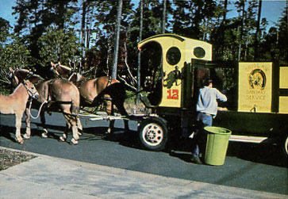
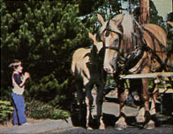

A Horse-Drawn Wagon Turned Sanitary Service
Learn how a sanitary service manager eager to cut fuel costs replaces his garbage truck with a horse-drawn wagon.
By E. Horswill
September/October 1981
Every Thursday morning in Florence, Ore. - a seacoast tourist community of 10,000 - parents line up along the street with their wide-eyed, breathless children in tow. The townsfolk listen intently until they hear the sound of horses' hoofs clipclopping on the pavement ... because that sound announces the approach of Mike Johnson and his team of glossy Belgian mares. And his horse-drawn wagon - which is pretty enough to be a child's toy - bears the inscription: SIUSLAW SANITARY SERVICE.
That's right, folks. A modified wagon and two docile dobbins - Mandy and Dolly - are garbageman Mike Johnson's answer to the high cost of gas!
The idea of converting his sanitation service from a motorized to a horse-drawn business came to Mike in the summer of 1979, at the height of that year's gasoline shortage. He sat down with pencil and paper to figure out a way to pull the reins on his burgeoning expenses. A new truck would cost $30,000, but - and the realization must have come in a moment of inspiration - a wagon and a team of horses would cost only half that amount!
Johnson admits that Florence's city officials weren't exactly thrilled by the idea of a horse-drawn garbage service:
"How will horses behave in traffic?"
"What will our citizens think about having manure on the streets?"
"Will the animals attract flies?"
In the end, however, the powers-that-be agreed to give him a two-month trial in a small area of town. So Johnson immediately set to work constructing a wagon with a side-loading, factory-built compactor plus running gear and a seat. Then he installed a hydraulic engine to drive a pump, and added turn signals and a two-way radio. Finally, he rigged all the controls so they could be operated from the driver's seat.
Mike began providing garbage pickup service for 600 customers on Sept. 10, 1979. As he had hoped, Mandy and Dolly trotted through traffic unperturbed. On the 26th of the month - in order to evaluate his service - Johnson mailed out a questionnaire to 271 of his customers ... and their enthusiasm overwhelmed him. "How I wish my folks could have seen these magnificent, well-behaved animals," wrote one. "My children love it ... I'm glad they're having a chance to discover what kind of work a horse can do," declared another. And an organic gardener settled the problem of droppings: "Leave them in front of my place!"
Johnson is pleased with the economics of his operation, too. "I saved 256 gallons of gasoline in the first ten days," he says. "Moreover, my daily overhead now comes to $172, compared to my former conventional trucking expenses that totaled $214."
Mike started full-time service on May 1, 1980 after drawing upon his experiences during the trial run to improve the wagon. He rebuilt the front axle, incorporating a pivoting fifth wheel that enables him to make shorter and easier turns, and revamped the rear dump door. Then he added a cab, like those that used to be seen on horse-drawn milk wagons, to protect the driver from wind and rain. Mike also began to train an alternate for Dolly so she could take "maternity leave" (her offspring, a colt named Si, is now traveling with his mother, learning the ropes of the business).
Recently, the trash collector found himself at City Hall, defending his franchise rights because a would-be competitor wanted in. However, Mike's fans packed the chamber, and the City Council voted unanimously in favor of Siuslaw Sanitary Service. After the decision, Johnson stood as if stunned while members of the community congratulated him. "I never dreamed I'd get that much support," he said. It just goes to show that individualism and ingenuity live on!
|
 PHOTO: CHRIS LUNESKI Mandy and Dolly, Mike Johnson's fine team of palomino Belgian mares, stand calmly next to the horse-drawn wagon. Tethered to his mother's harness, Si takes in the process. |
 PHOTO: CHRIS LUNESKI A grateful Dolly buries her nose in cool water as Mike holds the bucket. |
 PHOTO: CHRIS LUNESKI Si nuzzles Dolly's face while a delighted child claps and smiles. |